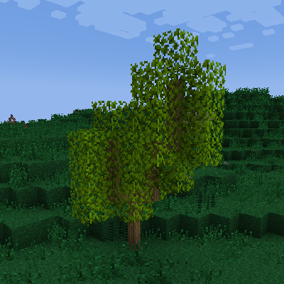

Index / The World / Wild Fruits
Wild Fruits
Many different varieties of wild fruits can be found growing in the world. These can be collected to be eaten, or farmed, with the right equipment. These can be found on different varieties of bushes or trees. In general, fruits can be found in three types of plants: Fruit Trees, Tall Bushes, and Small Bushes.
All fruiting plants have a common lifecycle. They will grow, form flowers, sprout fruit, and then lay dormant in a yearly cycle.
Fruit plants are seasonal. During their cold season, these plants will appear brown and lifeless. In the spring, they become green and healthy, getting ready to produce fruit and grow larger. The exact times this happen varies by the fruit. Fruit plants can die, as well: of old age, and of improper climate conditions.
Fruit Trees
Fruit trees grow from tiny saplings into large, flowering trees. The branches of fruit trees are their heart, and they will grow as long as the climate conditions are right. As fruit trees mature, they will grow leaves all around their branches. The leaves can flower and fruit depending on the season.

A typical fruit tree.
Fruit trees start out at Saplings. Saplings will only start growing, placing their first piece of the tree, if it is not the dormant season for that fruit. The size of the finished tree is loosely determined by how many saplings are in the original sapling block. More saplings means a bigger tree.
More saplings can be added to a single block through Splicing. To splice a sapling into another, just Right Click on it while holding a sapling and a Knife in your off hand.
Saplings can also be placed on the first 'elbow' sections a fruit tree produces, places where the branch is attached to one side and upwards. This allows one fruit tree to grow multiple fruits. Breaking these elbows with a Axe also yields saplings. Harvesting a fruit tree leaf is done with Right Click when the fruit tree is at its fruiting stage. This will give one fruit, and revert the plant back to its growing stage, until it is time for it to become dormant.
Cherry Tree
Temperature: 5 - 25 °C
Rainfall: 100 - 350mm
Multiblock
The monthly stages of a Cherry tree
Green Apple Tree
Temperature: 1 - 25 °C
Rainfall: 110 - 280mm
Multiblock
The monthly stages of a Green Apple tree
Lemon Tree
Temperature: 10 - 30 °C
Rainfall: 180 - 470mm
Multiblock
The monthly stages of a Lemon tree
Olive Tree
Temperature: 5 - 30 °C
Rainfall: 150 - 500mm
The processing of olives is used to produce lamp fuel.
Multiblock
The monthly stages of an Olive tree
Orange Tree
Temperature: 15 - 36 °C
Rainfall: 250 - 500mm
Multiblock
The monthly stages of an Orange tree
Peach Tree
Temperature: 4 - 27 °C
Rainfall: 60 - 230mm
Multiblock
The monthly stages of a Peach tree
Plum Tree
Temperature: 15 - 31 °C
Rainfall: 250 - 400mm
Multiblock
The monthly stages of a Plum tree
Red Apple Tree
Temperature: 1 - 25 °C
Rainfall: 100 - 280mm
Multiblock
The monthly stages of a Red Apple tree
Banana Tree
Temperature: 17 - 35 °C
Rainfall: 280 - 500mm
Bananas are a special kind of fruit tree. They grow only vertically, lack leaves, and only fruit at the topmost block. Saplings are dropped from the flowering part of the plant. Once a banana plant is harvested, it dies, and will not produce any more fruit. It must be replanted in the spring.
Multiblock
A representative banana tree
Tall Bushes
Tall Bushes are fruit blocks that are able to grow in all directions, and spread. They do this by either growing directly upwards, up to three high, or placing canes on their sides, which can mature into full bush blocks. After a while, the bushes will stop spreading, and reach maturity. Harvesting these bushes with a sharp tool has a chance to drop a new bush. Bushes that are fully mature will always drop themselves.

A wild bush.
Tall bushes are able to spread when their canes have somewhere to take root. Practically, this means that they need a solid block under them to place a new bush on. Providing a flat, open area free of grass or other debris gives them the best chance to grow.
Bushes, unlike fruit trees, take into account surrounding water blocks to determine their Hydration, unlike fruit trees, which only care about rainfall.
Any full bush block can grow berries, which are harvestable with Right Click.
Blackberry Bush
Temperature: 7 - 24 °C
Hydration: 24 - 100 %
Blackberry bushes only spawn in areas with few trees.
Multiblock
The monthly stages of a Blackberry spreading bush
Raspberry Bush
Temperature: 5 - 25 °C
Hydration: 24 - 100 %
Raspberry bushes only spawn in areas with few trees.
Multiblock
The monthly stages of a Raspberry spreading bush
Blueberry Bush
Temperature: 7 - 29 °C
Hydration: 12 - 100 %
Blueberry bushes only spawn in areas with few trees.
Multiblock
The monthly stages of a Blueberry spreading bush
Elderberry Bush
Temperature: 10 - 33 °C
Hydration: 12 - 100 %
Elderberry bushes only spawn in areas with few trees.
Multiblock
The monthly stages of a Elderberry spreading bush
Small Bushes
Small Bushes are a kind of low lying fruit block that spawns in forests. Small bushes occasionally will spread to surrounding blocks, placing duplicates of themselves. They are harvested just with Right Click.
Multiblock
Bunchberry Bush
Temperature: 15 - 35 °C
Hydration: 24 - 100 %
Multiblock
Gooseberry Bush
Temperature: 5 - 27 °C
Hydration: 24 - 100 %
Multiblock
Snowberry Bush
Temperature: -7 - 18 °C
Hydration: 24 - 100 %
Multiblock
Cloudberry Bush
Temperature: -2 - 17 °C
Hydration: 9 - 100 %
Multiblock
Strawberry Bush
Temperature: 5 - 28 °C
Hydration: 12 - 100 %
Multiblock
Wintergreen Berry Bush
Temperature: -6 - 17 °C
Hydration: 12 - 100 %
Multiblock
Cranberry
Temperature: -5 - 17 °C
Cranberry bushes can only be grown underwater.